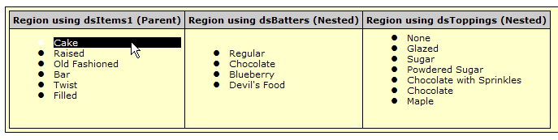

Create a Spry nested data set
- Open a new or existing HTML page.
- Make sure that you’ve linked the Spry data library files
to the page and created an XML data set.
For example, you might create an XML data set, dsItems1, with the following code:
<script language="JavaScript" type="text/javascript" src="../../includes/xpath.js"></script> <script language="JavaScript" type="text/javascript" src="../../includes/SpryData.js"></script> <script type="text/javascript"> var dsItems1 = new Spry.Data.XMLDataSet("data/xmldata.xml", "/items/item"); </script> - Link the SpryNestedXMLDataSet.js file to the page by
inserting the following script tags after the other
data set script tags in the head, as follows:
<script language="JavaScript" type="text/javascript" src="includes/xpath.js"></script> <script language="JavaScript" type="text/javascript" src="includes/SpryData.js"></script> <script language="JavaScript" type="text/javascript" src="includes/SpryNestedXMLDataSet.js"></script>
The SpryNestedXMLDataSet.js file is in the same Adobe Labs includes folder as all of the other Spry XML JavaScript files.
- Create the nested data set (or sets) by adding new constructor
variables, after the constructor for the parent data set, as follows:
<script type="text/javascript"> var dsItems1 = new Spry.Data.XMLDataSet("data/xmldata.xml", "/items/item"); var dsBatters = new Spry.Data.NestedXMLDataSet(dsItems1, "batters/batter"); var dsToppings = new Spry.Data.NestedXMLDataSet(dsItems1, "topping"); </script>The completed example code might look as follows:
<script language="JavaScript" type="text/javascript" src="../../includes/xpath.js"></script> <script language="JavaScript" type="text/javascript" src="../../includes/SpryData.js"></script> <script language="JavaScript" type="text/javascript" src="../../includes/SpryNestedXMLDataSet.js"></script> <script type="text/javascript"> var dsItems1 = new Spry.Data.XMLDataSet("data/xmldata.xml", "/items/item"); var dsBatters = new Spry.Data.NestedXMLDataSet(dsItems1, "batters/batter"); var dsToppings = new Spry.Data.NestedXMLDataSet(dsItems1, "topping"); </script> - After the Nested data set is created, you can display
the data on the web page. The following code produces a three-column
table in which the first column includes data from the parent data
set, and the second two columns include data from the nested data
sets:
<script language="JavaScript" type="text/javascript" src="../../includes/xpath.js"></script> <script language="JavaScript" type="text/javascript" src="../../includes/SpryData.js"></script> <script language="JavaScript" type="text/javascript" src="../../includes/SpryNestedXMLDataSet.js"></script> ... <script type="text/javascript"> var dsItems1 = new Spry.Data.XMLDataSet("data/xmldata.xml", "/items/item"); var dsBatters = new Spry.Data.NestedXMLDataSet(dsItems1, "batters/batter"); var dsToppings = new Spry.Data.NestedXMLDataSet(dsItems1, "topping"); </script> ... <table> <tr> <th>Region using dsItems1 (Parent)</th> <th>Region using dsBatters (Nested)</th> <th>Region using dsToppings (Nested)</th> </tr> <tr> <td spry:region="dsItems1"> <ul spry:repeatchildren="dsItems1" spry:choose=""> <li spry:when="{ds_CurrentRowNumber} == {ds_RowNumber}" spry:setrow="dsItems1" spry:select="select" spry:hover="hover" spry:selected="">{name}</li> <li spry:default="" spry:setrow="dsItems1" spry:select="select" spry:hover="hover">{name}</li> </ul> </td> <td spry:region="dsBatters"> <ul spry:repeatchildren="dsBatters"> <li>{batter}</li> </ul> </td> <td spry:region="dsToppings"> <ul spry:repeatchildren="dsToppings"> <li>{topping}</li> </ul> </td> </tr> </table>The output is as follows:

When you click an item in one of the parent rows, the current row of the parent data set updates. The two other lists that use nested data sets also change, because they depend on the data coming from the parent data set.
To see more code samples and working examples of nested data sets, see the Nested XML Data samples page on Adobe Labs.